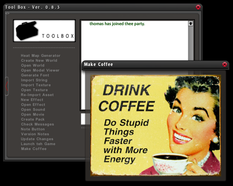

We (read...mostly Ph03nix
Screengrab from Ph03nix of our group using it to test:

 by commador » 11 Apr 2009, 03:28
by commador » 11 Apr 2009, 03:28

 by Ph03nix » 11 Apr 2009, 05:07
by Ph03nix » 11 Apr 2009, 05:07

 by Andrew75 » 11 Apr 2009, 08:23
by Andrew75 » 11 Apr 2009, 08:23

 by The computer Guy » 11 Apr 2009, 10:52
by The computer Guy » 11 Apr 2009, 10:52
 by Boxsmith » 11 Apr 2009, 11:23
by Boxsmith » 11 Apr 2009, 11:23
 by Jesse Meyer » 11 Apr 2009, 12:28
by Jesse Meyer » 11 Apr 2009, 12:28

 by commador » 11 Apr 2009, 12:52
by commador » 11 Apr 2009, 12:52
 by Ph03nix » 11 Apr 2009, 22:25
by Ph03nix » 11 Apr 2009, 22:25

 by Amo » 13 Apr 2009, 06:43
by Amo » 13 Apr 2009, 06:43

 by Ph03nix » 13 Apr 2009, 10:08
by Ph03nix » 13 Apr 2009, 10:08
Users browsing this forum: No registered users and 2 guests
| Company | Contact | Privacy Policy | Site Map | Copyright © 2001–2015 Terathon Software LLC |  |